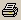
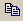
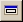
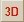
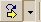
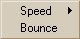
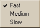
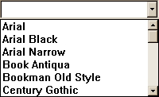
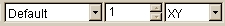

|  | Prints the active display. |
|  | Copies the image and puts it on the Clipboard. |
|  | Toggles the isotropic drawing option. |
| Restores display window to default settings. |
|  | Render display results in 3D window. |
| 

 |
Animates display window through slices, when more than one slice position
is set*. Click down arrow to select:
Speed of animation: Fast, Medium, Slow
Bounce: moves continuously from beginning to end to beginning of
data.
|
|  | Applies font to text. The drop-down list provides access to all
available fonts. |
|  | Left: Changes which multi-value is displayed. Drop-down list changes
from Default to Real/Imaginary when applicable data is loaded
and the view position is other than XY. |
| Middle:*Sets slice position within data display (XY, ZY, XZ).
Only 1 slice position is available in the XY view
position. |
| Right: Sets the view position for the display data. |